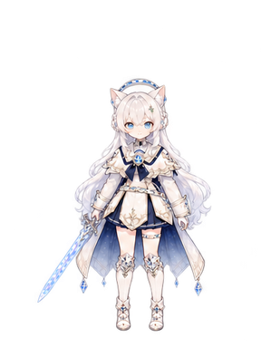
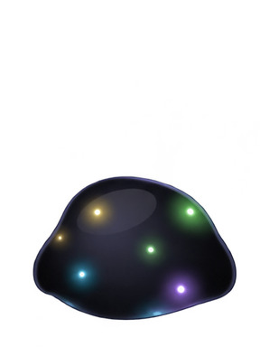
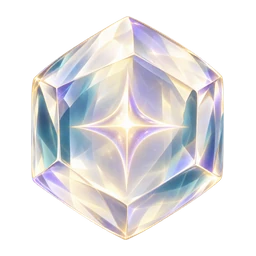
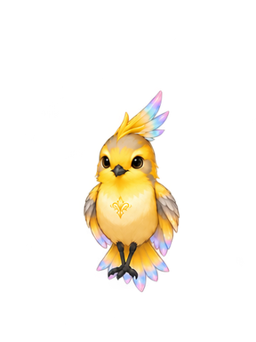

敵の作戦を読む
戦場によって、敵は作戦を持っています。増援は決まったターンに現れ、そのターンの初めに「増」の床で知らせます。伏兵は物陰に隠れ、近づくと移動を止めて現れます。第二形態の核は一度倒れても立ち上がり、進軍の敵は決まったターンから一斉に動きます。ステージ攻略の「敵の作戦」で、戦場ごとの中身を確かめられます。
THE COMPLETE FIELD GUIDE / Ver. 1.26.0
次の一手から、旅の結末まで。
戦場・育成・装備・遊びを読み解く、あなたの攻略帳。


例：グラン、赤い果実、金継ぎ、共鳴の砂
攻略データは現在のゲーム実装から収録。戦場の地形・配置は生成されるため、座標固定の手順ではなく、敵編成と条件から判断する攻略を掲載しています。
01 / FIELD ATLAS
攻略情報を読み込み中…
S評価は同じ一戦で全ミッションを達成すると獲得。難易度ごとに記録・初回報酬・初S報酬が分かれます。通常戦のハードSは通常装備、ユニーク装備はボス戦のハードSです。
02 / BATTLE THEORY
戦場によって、敵は作戦を持っています。増援は決まったターンに現れ、そのターンの初めに「増」の床で知らせます。伏兵は物陰に隠れ、近づくと移動を止めて現れます。第二形態の核は一度倒れても立ち上がり、進軍の敵は決まったターンから一斉に動きます。ステージ攻略の「敵の作戦」で、戦場ごとの中身を確かめられます。
味方を選び移動と行動を決めます。敵の正面マーカーと背後表示を読み、待機するときは体の向きを選択。盤面の回転を使って、奥に隠れた床や予告を確認しましょう。
通常攻撃は正面1倍、側面1.1倍、背後1.25倍。背後は通常攻撃のミス判定を回避し、会心率も8%から18%へ上がります。高い位置からは1.15倍、低い位置からは0.9倍です。
味方の虹の床に立つと攻撃×1.1。敵の色の床では守り×0.9（くすみ耐性装備で防げます）。さらに戦場全体の味方色の割合で、全体の加護が段階的に上がります。
| 割合 | 攻撃 | 守り | 毎ターン |
|---|---|---|---|
| 25%未満 | ×1 | ×1 | 追加なし |
| 25%以上 | ×1.1 | ×1 | 追加なし |
| 45%以上 | ×1.2 | ×1.15 | 共鳴+1 |
| 65%以上 | ×1.3 | ×1.25 | 共鳴+2・HP8%回復 |
召喚は共鳴6、精霊を3ターン戦場へ呼び、別の行動と登場効果を得ます。エンチャントは共鳴3、心剣に3ターン宿し、アリアの通常攻撃が2回に。2回とも通常攻撃として行い、覚えた技を2回使える効果ではありません。
第五幕でパレット王から宝具「双彩の王笏」を受け取ると、1ターンに2体まで召喚できます。1体目の召喚のあともアリアの手番が残り、2体目の召喚か待機だけを選べます（共鳴はそれぞれ6）。パレット王は仲間にならず、技も教えません。
召喚中に倒された精霊は、その戦闘中の召喚・エンチャントが両方不可。守りと回復で精霊を保護しましょう。次の戦闘で使えます。装備の延長効果は基本の持続時間へ加算します。
3条件のステージでは3達成=S、2=A、1=B、0=C。ミッションのない戦場は規定ターン以内=S、+2まで=A、+5まで=B、それ以降=Cです。
くすみ条件は戦闘中の最大割合を四捨五入して判定し、指定値「未満」が必要。終了時だけ減らしても達成できません。HP条件は終了時の割合を判定。「倒させない」は召喚した精霊が対象です。
round( 攻撃 × 威力 × 各種攻撃補正 × 高低差 × 向き × 乱数 − 守り × 守り補正 × 0.5 )
乱数は0.92〜1.08、最低ダメージ1。会心は計算後に×1.5。鉛の殻が残る相手へ通常の攻撃をするとダメージ×0.35。守り無視の攻撃なら守りと鉛の軽減を避けられます。守り状態は守り×1.3。やさしいでは味方が受けるダメージ×0.6。精霊の熟練や装備、ボスの段階停止、特殊防壁も結果に影響します。
ヴァルドの攻撃補正 = 1.15 + 0.4 × 失ったHP割合。HP100%で+15%、50%で+35%、ほぼ0で+55%。宿している間はアリアのHP、召喚時はヴァルド自身のHPを参照し、回復すると上昇分も戻ります。
獲得しずく = round((撃破のしずく + 戦場クリア基礎額) × 評価倍率 × 難易度倍率)。評価はS1.5 / A1.25 / B1.1 / C1。難易度はやさしい0.8 / ふつう1 / ハード1.5です。
基礎HP・攻撃・守りは「基礎値 + 成長値×Lv」を四捨五入。精霊は絆段階が1つ上がるごとにHP+5%、攻撃+4%、守り+2%。絆の段階境界は0・8・20・40・70です。技習得の熟練は召喚／エンチャントで別の記録です。
移動+1の小さな鈴で回り込み、グランの宿しで射程を確保。予告線は横へ避け、ボスの背後へ通常攻撃を2回。HP条件があれば凪の構えを準備。
歩いた床を広げる絵筆の飾り、広範囲を塗るグランや王の技を優先。開始直後の虹を増やし、予告床を浄化。アイビー戦は宿した通常攻撃で2撃破も忘れずに。
スピネルの宿し、金継ぎの突き、黄金の裁断で守りを貫く。通常攻撃を重ねるより、共鳴3の必中技で殻ごと対処するとターンを節約できます。
02+ / CAMP BATTLES
第一幕・第四幕・第五幕の物語の途中で起こる、旗を奪い合う戦い。
ターンの初めに指揮点がたまります（基本3＋持っている旗の数）。行動1回で1点。同じ仲間を何度でも動かせますが、再行動のたびに移動が1減ります。
アリア・ノアール・クロムが、隣に敵のいない旗に立つと奪えます。周りの床が虹に染まります。敵の本陣を奪えば勝ち、自分の本陣を奪われると負け。本陣を狙ってくるのは騎兵だけです。
敵の攻撃が届く床で止まると、近くの敵が2人まで撃ってきます。スピネルの隣なら半分に。土嚢の上なら、離れた攻撃と迎撃を4割減らせます。家と城壁は通れません。
見えるのは、仲間の周り（ノアール5マス・グランとマリー4マス・ほか3マス）と、虹の床のそばと、味方の旗の周りだけ。霧の中の兵は選べず、狙えず、「危」にも出ません。旗を取って虹を広げるほど、視界が開けます。
偽の布告で色を黒く塗られた、王の七人の近衛。敵の本陣と旗に一人ずつ立ち、決して持ち場を離れません。倒すと色が戻って周りの床が虹になり、その旗からは増援が出なくなります。
新しい仕組みが初めて出てくる戦いでは、最初の手番の前に図つきの説明が開きます。戦闘の「？」の「しくみの説明を読み直す」から、いつでも読み直せます。
03 / SPIRIT GROWTH
熟練は召喚時+3・召喚精霊の命中+1／エンチャント時+2・宿した通常攻撃の命中+1。系統ごとに8・20・40で3つの技を覚えます。覚えた技の使用に、その精霊を宿している必要はありません。
MATERIAL PLANNER
1つの技の+3までに、共鳴の砂19・精霊素材12・澄明の核1。下の計算で、現在の段階から必要な分を確認できます。
一度習得した技はアリアの技です。召喚とエンチャントは習得ルートを分けているので、片方だけ使うともう片方の3技は増えません。敵に命中させて熟練を上げ、短い戦場でも両方を使い分けましょう。
強化は最大+3。攻撃威力は段階ごとに元の威力から+12%、回復は+5ポイント（上限75%）、吸収も+5ポイント（上限40%）。守りと追い風の持続は+2から1ターン増加、縛りは+3から1ターン増加（上限3）。共鳴コストと射程は変わりません。
素材は戦闘クリアのたびに獲得し、各ミッションの初達成で対応結晶と砂を1つずつ追加。各戦場・各難易度の初Sで核1つ。素材袋の上限は種類ごと999です。ミニゲームの未受取分は、素材を使った後のクリアで受け取れます。
04 / TREASURE BOOK
画像と効果から探し、入手先の攻略へ。
装備は刻印・衣・飾りの3部位。通常装備は店や通常戦のハードS、ユニーク／伝説装備は該当ボスのハードSで獲得します。道具は戦闘中の行動を1回使い、種類ごと最大9個。回復道具は自分か隣の味方が対象です。
以前の通常戦ハードSで入手したユニークは、記録が確認できる分を通常装備へ変更しています。同じ装備をボス戦ハードSで獲得した実績があれば保持されます。現在の入手先がない旧ユニークは図鑑にその旨を表示しています。
05 / LITTLE ADVENTURES
章の解放に合わせて、4つの遊びが開きます。

評価を問わず、各ミニゲームのハード初クリアで2個。初S評価でさらに1個。しずくは最高評価に応じた総額との差分、評価素材も未受取の段階分だけ獲得します。練習では報酬・記録は増えません。
ゲームの盤面と同じ点灯状態を入力し、「最短解」を押してください。攻略帳上の入力で、ゲームの盤面は変わりません。
点いている灯りをタップして入力してください。
06 / STORY WALKTHROUGH
本編、精霊加入、クリスタリアの復興。

クリアの境目はクロム撃破とエピローグの完了。パレット王を解放した時点では復興編もマリー加入も始まりません。パレット王はクロムと同じく人間の王で、旅には加わらず、双彩の王笏を託します。透明の国の名前はクリスタリア。クロムは人間の仲間となり、アリアと二人で失われた道や暮らしを直します。
復興編のクロムの剣は、ノアールが旅で身につけた浄化と精霊の力で組み直された剣です（ノアール本人ではありません）。ノアールはその力を輪にして、アリアの左の薬指へ渡します。四響のエンチャントは1戦闘に1回で、元の精霊が倒されても使えます。
ノアールの吸収：第一幕の鐘楼から、ノアールが戦場に並びます。2マス以内でHPが最大の30%以下になった穢れを飲みこむと、その穢れは消え、経験としずくは通常の撃破と同じだけ入ります。種類ごとの初回だけ技が残り、戦闘の「預かった技」と仲間の画面に並びます。
最終章「灰色の継ぎ目」は、復興編を読み終えると、テラ・コッタから開きます。クロムと馨は、ここで初めて出会います。アリアとクロムの二人で、向こう側の闇が降り注いだ馨と戦います。HPは馨ではなく「降り注いだ闇の厚さ」。予告床は時計の刻みのように毎ターンずれます。ミッションは20ターン以内・二人のHP60%以上・背後から3回、ハードSで透明の鞘。テラ・コッタで戦闘があるのはこの章だけです。
マリーは多くの世界を知り、深い交流を持つ重要人物。復興第3話で帰還の手がかりを拾い、第4話で苗床の地下へ進み、闇に取り込まれた彼女を救出します。マリーを呑んだ嵐の闇は、クロムがクリスタリアへ流した黒でした。マリーは生きて闇に留まっており、自分の意志で精霊の姿を選び仲間になります。以後は知識と人々とのつながりで、本編の調査・復興・最後の対決を導きます。
復興編は、クロムが止めたあとも国に滲み続ける黒の出どころを追う旅です。黒は時計のような音と、「正しく写せ」という誰でもない言葉を運びます。第8話で観測塔の黒の湖をほどくと、レンズが黒い糸の先にテラ・コッタを映します。物語全体の最後の相手は、最終章の馨です。リラや亡くなった人が蘇る結末にはせず、失われた席を残したまま、今ある暮らしを戻していく旅です。
クロム撃破後、復興の旅を開始すると王国外の5つの伝説級クエストへ挑めます。難易度はハード専用。適正Lvは32・35・38・41・44です。三つの灯を浄化して防壁を開き、核を含む敵を倒しましょう。S評価で、それぞれ別の伝説装備を獲得します。
復興依頼は本編の進行に合わせて解放。橋と庭の優先順を選んでも、どちらの依頼にも取り組めます。復興本編第5話以降へ進むにはマリーの救出・加入が必要です。
YOUR OWN FIELD NOTES
ゲームのセーブとは別の、このブラウザだけのメモです。ステージ攻略の「攻略済み」を押すと難易度別に記録できます。
ゲーム内のセーブ持ち出し機能でバックアップし、同じゲームへ読み込んで引き継げます。ブラウザのデータを消す前や端末を変える前に持ち出してください。この攻略帳にゲームのセーブをアップロードする必要はありません。
戦場の説明が邪魔なときはタップで閉じ、必要なときに再表示。敵の向きが見えにくいときはマップを回転して正面・背面表示を確認。クリア画面のマップへ戻る操作から次のステージや難易度を選べます。
THE NEXT COLOUR IS YOURS